Open-world object manipulation requires a comprehensive understanding of physical scenes and user commands to solve complex tasks. Recent advances in vision-language models (VLMs) have demonstrated capabilities in open-world problems, how to utilise them for fine-grained scene understanding and advanced reasoning of vision-language information remains an open challenge. For this purpose, this study explores using pre-trained VLMs to interpret and infer vision-language information and generate keypoint affordance-based robot actions for task execution. Our method enables a fine-grained semantic understanding of the robotic scene and its elements' spatial relation with zero-shot samples. By prompting the pre-trained VLM, advanced reasoning and common-sense knowledge of the VLMs are utilised to predict the latent logic representation and control steps of language tasks. Then, a keypoint affordance representation method is presented to extract optimal manipulation points for the object of interest, where the VLM, as a motion planner, takes keypoint affordances and visual observations to generate text-based robot path descriptions for task execution. Next, high-level text-based robot paths are linked with low-level robot controllers to regulate the robot behaviours for task execution. Finally, a set of experiments on various manipulation tasks are performed to validate the proposed methods with evaluation metrics.
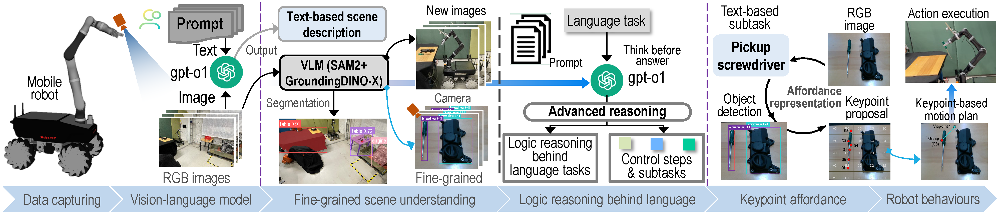
The workflow starts with visual observations of a robotic scene. Prompted with language instructions, a pre-trained VLM (GPT-o1) is adopted for fine-grained scene descriptions, consistent elements detection, and their spatial relation representation. Then, given a language-based task, GPT-o1's advanced reasoning is utilised to perform control logic reasoning behind the language task and further decompose it into a sequence of optimal sub-tasks. For each sub-task and its annotated images, keypoint affordance representation is proposed to generate candidate keypoints for robot manipulation (e.g., grasping and ), followed by selecting and chaining optimal keypoints for robot path with the prompt by GPT-o1. Finally, the text-based high-level robot path is linked to the low-level controller for task execution.
Given the robotic scene image and language tasks, a VLM (GPT-o1) is prompted for scene description with fine granularity, its constituent element detection, and their spatial relation representation. The object is described by a mask, a text label and a 2D bounding box. Given the scene image, the GPT-o1 is prompted by `describe this robotic scene, identify its constituent elements and their spatial relation', and it originally generates a long text description of the robotic scene. Here, the simplified description with the spatial representation and the highlight of the `subject'-`predicate'-`object' are `mobile robot (CL); 2) workbench with tools (L); 3) small wooden table with red container, possible plier and fastening tools (CR); 4) engine block in wooden crate (R); 5) safety markings (F)', in which `L, R, C, and F' represent `left, right, centre, and floor', respectively. Also, the objects in the scene image are segmented and detected with bounding boxes and text labels, as shown in the middle part of Figure. Given the language task `pick and place screwdriver on the table near the engine', the `object' is extracted and formulated as `screwdriver', `table', and `engine', and they are grounded with physical objects. Figure shows two tables and one engine on the scene are accurately detected and localised. However, the object of `screwdriver' cannot be detected, and this is because the caption-guided pertaining scheme of VLMs often limits visual details that can be retained about the image. However, the robot needs to know where the object is for manipulation. By querying the GPT-o1 with multiple scene images, it reasons the spatial relation between the object with the robotic scene. The response of the GPT-o1 pinpoints that the screwdriver is on the left-side table of the mobile robot. By grounding the image with the text prompt, the mask, the bounding box, and the text label of the screwdriver were created (the right part of Figure).
Using a language prompt, the LLM is prompted to reason the control logic behind the language task, given the semantic understanding of the robotic scene. These control steps can reveal how the robot finishes the task step by step, and each control step is represented by a natural language description and is defined as a sub-task. By prompting the LLM, it examines the fine-grained observation of the robotic scene and decomposes the language task into a sequence of feasible sub-tasks. For each of the sub-tasks, the LLM is requested to provide a summary of the sub-task instructions, which are composed of descriptions of the corresponding objects and robot actions.
The pre-trained VLM is queried to identify the appropriate part of an object for grasping rather than annotating marks generated from SAM2. The parts of interest are segmented using segmentation networks to extract the segmentation masks, and then given the identified parts with masks, the pre-trained VLM is employed again to produce keypoint-based affordance representation for robotic manipulation. Given a pre-trained VLM, it starts with the k-th subtask. The inputs the language task, the input RGB images with part-level granularity, and the depth images at the k-th subtask, the prompt to produce the keypoint-based affordance representation, and it includes grasping, contact, and target keypoints, which are chained together to form a robot path.
| Task | Specifications | Grasping object | Target object | Step | Subtask/Motion direction |
| 1 | Pick the valve cover from the black table and place it on the table near the engine. | Valve cover | Table near engine | 4. | 1. Dock in front of the black table./-; 2. Pick the valve cover./Upward; 3. Move to the table near the engine./-; 4. Place the valve cover on the table./Downward. |
| 2 | Pick the screwdriver from the black table and place it on the table near the engine. | Screwdriver | Table near engine | 4. | 1. Dock in front of the black table./-; 2. Pick up the screwdriver./Upward; 3. Move to the table near the engine./-; 4. Place the screwdriver on the table./Downward. |
| 3 | Insert the socket bit into the left-bottom first hole of the wooden holder. | Socket bit | Hole | 3. | 1. Pick up the socket bit./-; 2. Move the socket bit over the block./Upward; 3. Insert the socket bit into the black hole./Downward. |
| 4 | Pick the plier into the red container. | Plier | Red container | 2. | 1. Grasp the left handle of the plier./Upward; 2. Move the plier onto the red container./to the right. |
| 5 | Place the black cube into the white box. | Black cube | White box | 2. | 1. Pick up the black cube./upward; 2. Move the black cube onto the white box./from left to right. |
| 6 | Place the screw into the red box. | Screw | Red box | 2. | 1. Pick up the screw./-; 2. Move the screw over the red box and place it inside./to the right. |
| 7 | Pickup the spoon from the paper cup and place it into the bowl | Spoon | Bowl | 3. | 1. Pick up the spoon from the cup/upward; 2. Move the spoon over the bowl/from left to right; 3. Place the spoon into the bowl/downward. |
| 8 | Use brush to clean the plastic rag on table. | Brush | Plastic rag | 2. | 1. Grasp the brush by the near-end part/-; 2. Use the brush to sweep the tag/from right to left. |
| 9 | Pick and place green milk packet into the lunch box, and then pick and place purple milk packet into the lunch box. | Green milk packet & purple milk packet | Lunch box | 4. | 1. Pick up the green milk packet/upward; 2. Move the green milk packet onto the lunch box/to the right. 3. Pick up the purple milk packet/upward; 2. Move the purple milk packet onto the lunch box/to the right. |
Language task: "Pick the valve cover from the black table and place it on the table near the engine."
Fuigure (a): Experimental setup and execution of Subtask 2: it is `pickup the valve cover', and the wrist camera captures the image of the valve cover and screwdriver, as shown in the inset; Figure (b) Robot action: robot is instructed to grasp valve cover via grasping keypoint affordance (G1); Figure (c) Robot performing subtasks 3 and 4: robot takes valve cover to move to the table near engine, and places it on the table. Figure (d) Object detection and segmentation: The text object of 'valve cover' is segmented from the subtask and then is grounded with the object in the image, where the mask and bounding box with the text label and probability; Figure (e) Candidate keypoints for object manipulation: Given the annotated image, the 'findContours' from OpenCV is adopted to get the candidate points on the object mask, where the point closest to the mask's centroid is selected as the initial point (G1). Then, the farthest point sampling method iteratively gets candidate keypoints as the keypoint pool, which is used for prompting the VLM for the keypoint selection. Specifically, five keypoints (G2-G6) are selected and plot on the scene image; Figure (f) Keypoint affordance-based robot path plan: the GPT-o1 selects the optimal 2D grasping keypoint and waypoints based on its geometry, and then generates robot paths for the pick-up operation in the robotic coordinate system. The image is segmented by 2D grids, which are indicated by [A1,..., A5, B1,..., B5, E1, ..., E5], and the model takes the centre of each grid as a candidate waypoint.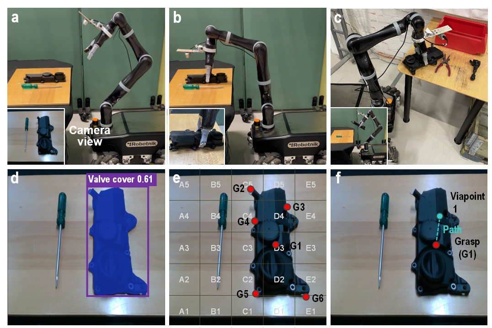
Pick the screwdriver from the black table and place it on the table near the engine.
Figure shows (a) Experimental setup; (b) Grasp the screwdriver with the grasping keypoint affordance; (c) Lifting the screwdriver; (d) Object detection and segmentation of the text object; (e) Keypoint candidate proposal for grapsing the object; (f) Keypoint affordance-based robot path plan grounded into the low-level controller.
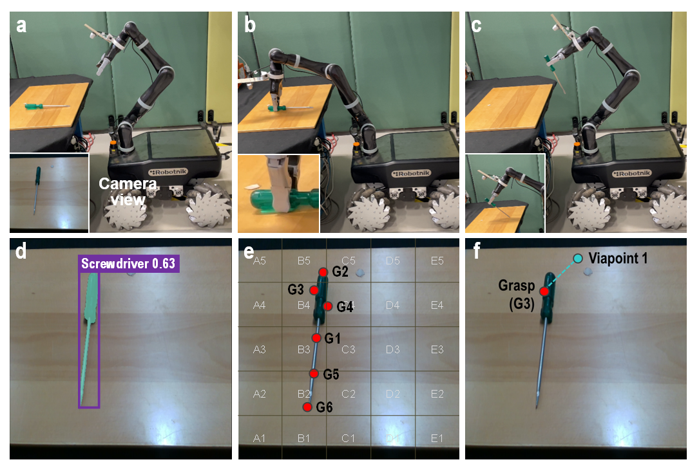
Insert the socket bit into the left-bottom first hole of the wooden holder.
Figure shows (a) Experimental setup; (b) Grasp the socket bit with the grasping keypoint; (c) Insert the socket bit into the left-bottom first hole of the wooden holder; (d) Small-sized object detection and segmentation; (e) Keypoint candidate proposal for object manipulation; (f) keypoint affordance-based robot path plan.
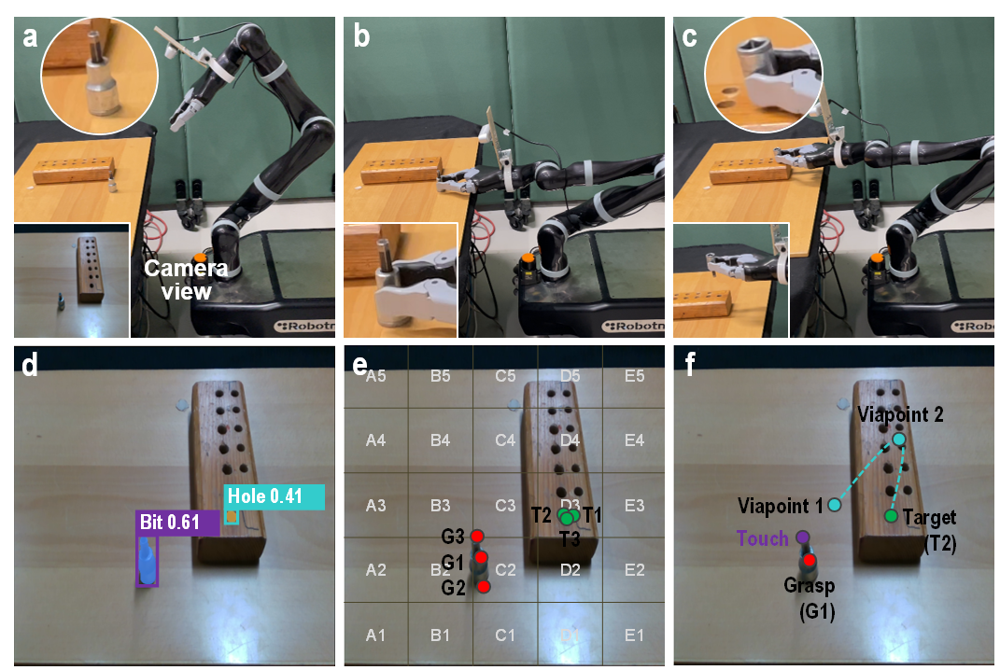
Pick the plier into the red container.
Figure shows (a) Experimental setup; (b) Grasp the plier with the grasping keypoint (grasping keypoint on left-side handle instead of G1 (cnetre of the mask)); (c) Insert the socket bit into the left-bottom first hole of the wooden holder; (d) Small-sized object detection and segmentation; (e) Keypoint candidate proposal for object manipulation; (f) keypoint affordance-based robot path plan.
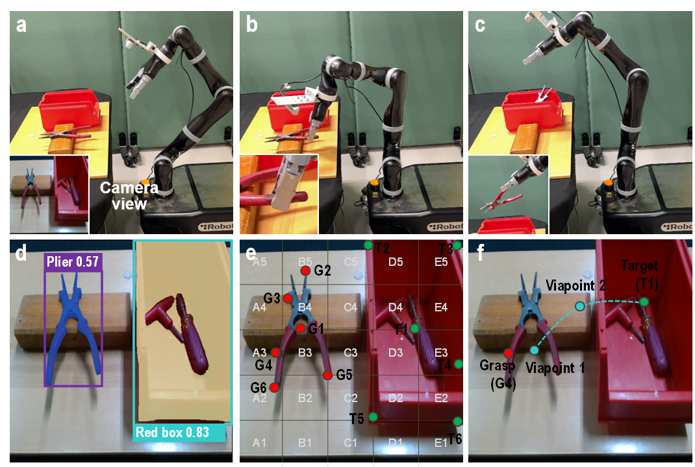
Place the black cube into the white box.
Experimental results: (a) Experimental setup; (b) Grasp the black cube with the grasping keypoint affordance; (c) Placing the cube into the white box; (d) Object detection and segmentation; (e) Keypoint candidate proposal for object manipulation; (f) Keypoint affordance-based path plan.
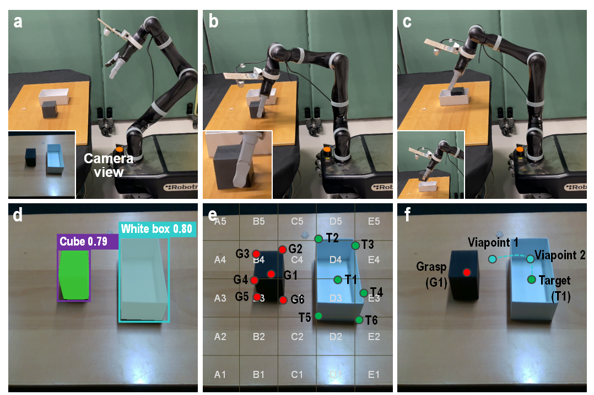
Place the screw into the red box.
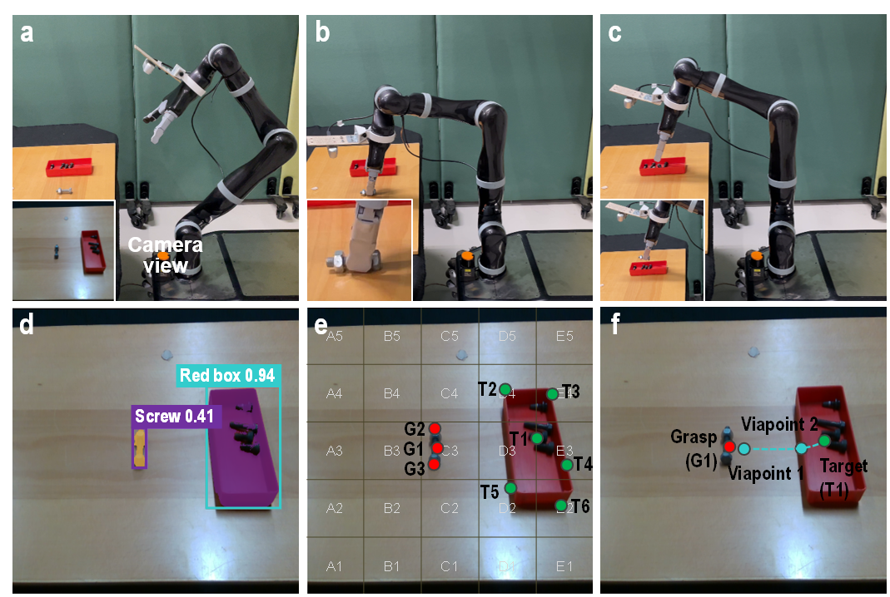
Pickup the spoon from the cub and place it into bowel.
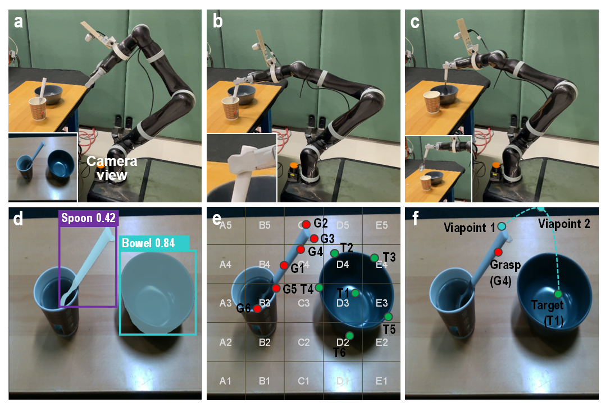
Using the bruch to clean the plastic rag from right to left.
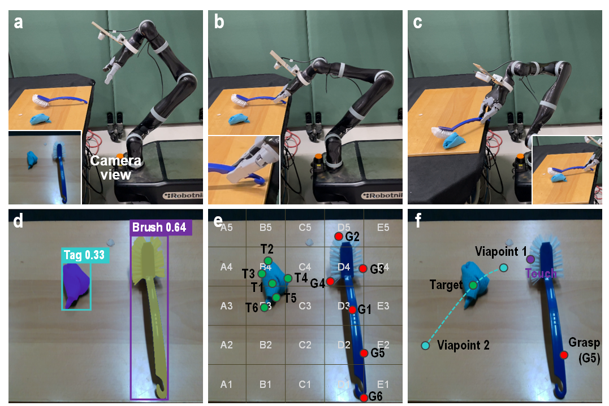
Firstly pick and place green milk packet into the lunch box, and then pick and place purple milk packet into the lunch box.
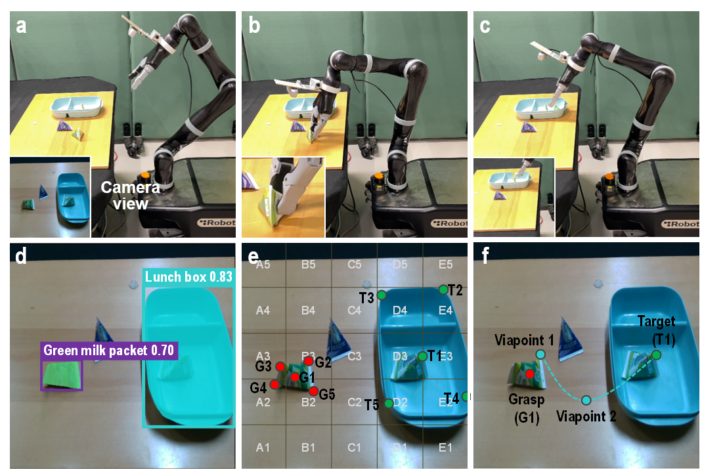
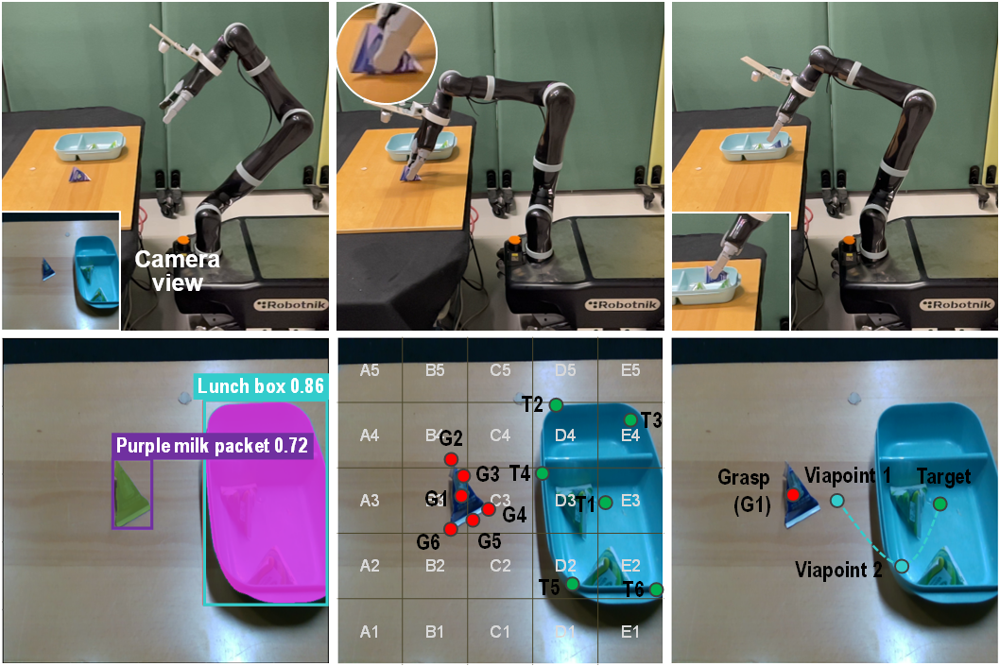